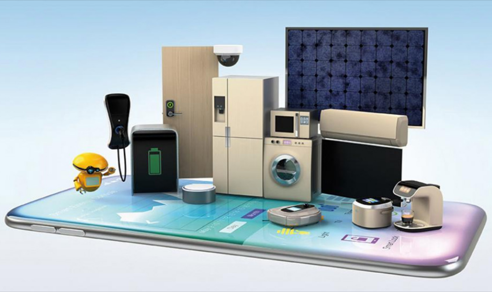

01
5G como servicio, ¿Qué tan disruptiva será esta tecnología?
02
Big Data, la solución de las grandes empresas
03
Blockchain y el voto electrónico
04
Ciberataques y la Ingeniería Social
05
Cómo las redes sociales afectan la salud mental
06
Domótica accesible
07
El arte de venderse
08
La presencia de la tecnología en el mundo del arte
09
Procastinación Responsable
10
¿Qué define a un arquitecto de software?
11
Realidad aumentada como herramienta educativa
12
Servicio de vehículos autónomos como medio de transporte
13
¿Realmente conviene invertir en Bitcoin?
14
Recorriendo la última milla: implementación de software en múltiples clientes